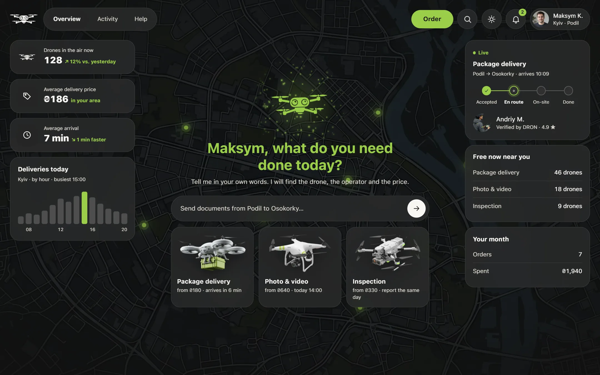
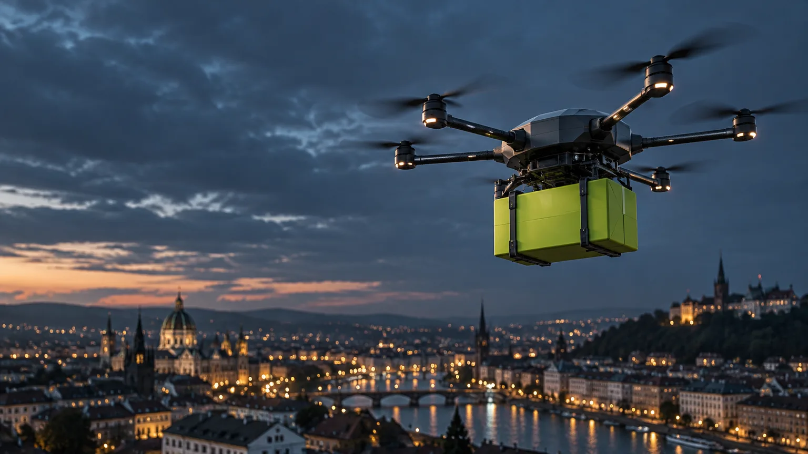
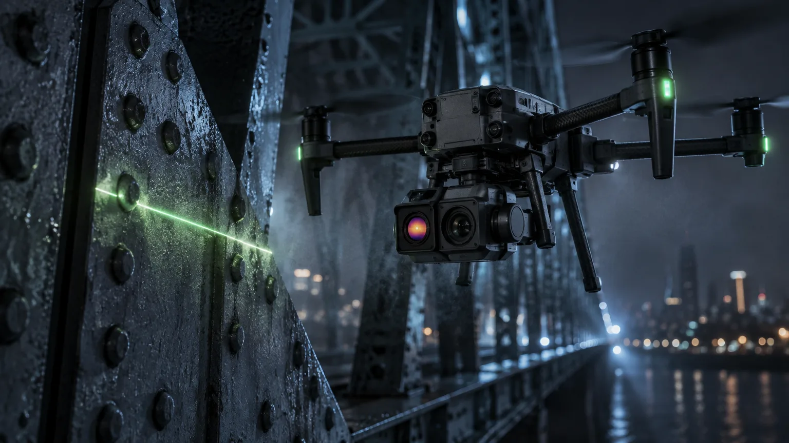
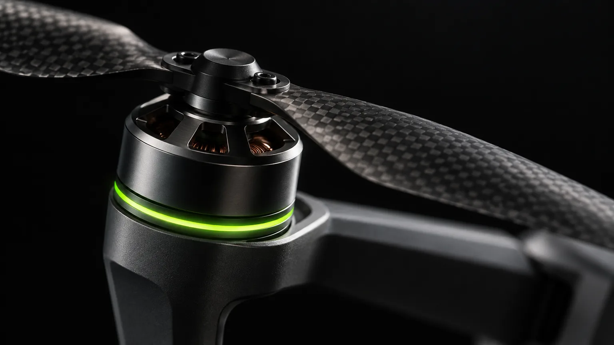

The client
When I need a result that only a drone can deliver, I want to hand the job to a certified professional without managing anything myself, so that I get the outcome without ever thinking about the drone or the operator.


DRON is a drone-as-a-service product: a person orders a delivery, an aerial shoot or an inspection, and a certified operator from DRON's own fleet does the work. There are two sides, the client and the operator, on mobile web first and on desktop.
People who order a drone job have never flown a drone and never will, and the drone itself is what worries them: privacy, safety, noise. Today the work is found on classifieds, where the price hides behind a quote and nobody shows the operator's licence or insurance.
The operator is assigned automatically, and trust is shown, not claimed: verified, licensed and insured on the card before payment, a locked price, live tracking, and a delivery photo or an inspection report at the end. The operator gets jobs that fit one glance, a checklist on site, and is paid 2 hours after the result reaches the client.
Every stage, from research to handoff, was done with AI tools. Claude Code wrote, built and checked the research, the screens, the design system and the handoff: 754 of 1,972 commits carry its name, and five agents painted the operator side in parallel. Figma was driven from Claude Code through a local bridge, the Impeccable skill audited the design, and Playwright checked every page in a browser.

Fifteen competitors in three groups, eight of them compared on five axes, five products scored on how they earn trust. The finding that turned the product: people fear the drone more than the operator, and nobody shows who will fly it.
0of 8
Trust mechanics, score of 35
31Bolt, best
Trust in drone delivery
87%after trying it

Market reality
The drone is the fear, not the operator. Before trying it, more than half of US respondents did not trust drone delivery; after it, most changed their mind.
87%
positive after a real delivery
Sources: drone trust research 2024–2025 (SciTechDaily, Springer Future Business Journal); Raw Studio on Airbnb; kabanchik.ua, June 2026; benchmark of her own, July 2026. The whole research

A client who wants the result without learning drones, and a pilot who wants to fly, not to hunt for clients. Both are built on desk research; where data was missing, it is marked, not invented.

I want the result. I don't want to figure out drones. What matters is that it's reliable.
Kateryna, 31Client · marketing manager, Kyiv
60–70%
leave at a manual registration form
10 s
to accept or pass a job, from one glance
The offer shows the place, the service, the time and the pay. If he passes, it goes to the next operator.

I want to fly and earn. Paperwork and finding clients are not for me.
Andrii, 26Operator · licensed drone pilot
Personas from desk research, no interviews yet (research.html, User Personas). Quotes are translated from Ukrainian. Portraits are AI-generated stand-ins.

A job to be done is the progress a person wants to make in a situation, not a feature. Each job is written in one shape, so it can be tested against the screens:
When[situation]I want[motivation]so that[result]
The client
When I need a result that only a drone can deliver, I want to hand the job to a certified professional without managing anything myself, so that I get the outcome without ever thinking about the drone or the operator.
The operator
When I have the licence, the equipment and the time to do drone work, I want pre-qualified jobs to reach me without hunting for them, so that I can spend my time flying, not selling.
Three jobs shaped the first version: confirm the person coming is real and qualified; no void between paying and the arrival; get paid without managing it.


Every job became a flow, and every flow a row of pages linked one to the next. Here are the two main ones, on the phone, as they run in the live demo. Scroll sideways.
From the question to the delivery photo.
 1 · FindService, where, when
1 · FindService, where, whenA drone free?
 2 · ChooseParcel size and price
2 · ChooseParcel size and price 3 · DetailsAddresses, a note
3 · DetailsAddresses, a note 4 · ReviewLocked price, pay
4 · ReviewLocked price, payPayment authorised?
 5 · ConfirmedThe operator, verified
5 · ConfirmedThe operator, verifiedAs expected?
 7 · DeliveredThe delivery photo
7 · DeliveredThe delivery photoFrom the offer to the money on the card.
 1 · JobsAvailable, offers in
1 · JobsAvailable, offers in 2 · OfferOne glance, 10 s
2 · OfferOne glance, 10 sAccept in 10 s?
 3 · BriefEverything for the job
3 · BriefEverything for the jobAble to fly?
 4 · ChecklistNothing to guess
4 · ChecklistNothing to guess 5 · CloseThe photo is the proof
5 · CloseThe photo is the proofAn issue in 2 h?
 6 · EarningsPaid on its own
6 · EarningsPaid on its own 7 · WithdrawTo the card
7 · WithdrawTo the card
A product written by many hands, and here by many AI sessions, drifts in tone unless the rules are written down. So one voice file decides every string, and the client hears one calm, accountable voice on every screen. Trust beats wit, every line.

Not thisOops! Something went wrong 😅 Don't worry, we're on it!
DRONPayment declined. Nothing was taken from your account. Try again or use another method.
Not thisLook up, your delivery is inbound from the sky! 🚁
DRONDelivered. Your parcel arrived at 10:07.
Not thisOur trusted, professional, hand-vetted expert pilots.
DRONVerified by DRON · CAA licence · Insured · 214 jobs
Never: Oops!successfullyemoji in system messagesthe long dash

134 phone pages and 135 desktop pages, one page for every state: loading, empty, error, success. Below is the live demo itself. Pick a side and click through it, on the desktop and on the phone.


A customer journey map follows one person through every stage with the product, what they feel there, and where they leave. Kateryna's journey has four stages; the line is her mood, the red points are where she leaves.
Client journey from ux-research, user stories and CJM; the green lines are what changed in the design.

A design system is the set of rules and parts a product is built from: tokens for colour, type, space and motion, components made of them, and patterns made of components. DRON's is one stylesheet the product links, documented like Apple's guidelines, in light and dark, with every colour pair measured against WCAG AA.
SF Pro, ten steps, none below 11 pt; the system font, nothing to download.
One accent, a fill and never text; charcoal on green is 9.46:1.
Primary, secondary, tertiary and pay, 44 px tall; one green control per screen, primary on top.
Switch, chip, progress rail and 50 more.
Base 4; six radii from 10 to 999.
13 screen shapes, each used on three screens or more.
Three jobs: connect, show status, answer. No job, no animation.
The theme follows the device.


What a developer needs to build DRON from the repository, in one folder. What ships is the tokens; the screens and the CSS are the reference.
From a fresh clone, nothing to install.
Tokens, light and dark
372ship as tokens.css
Components
5313 patterns
Commits, June to October 2026
JunAugOct
Released
v1.0.0 · 27 Oct 2026
ResearchScreensSystemHandoff
Run it
$ python serve.py
What ships
design-system/tokens.css
The rest is reference: components, screens, assets